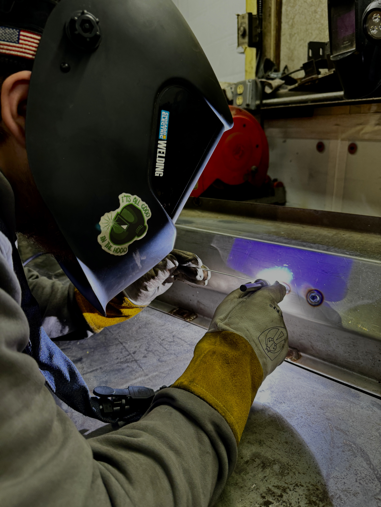

A radiant gold coin gleams under the light, its surface shimmering with a timeless allure.Quentin carefully checks the oil levels, ensuring the car is ready for the road ahead.Ian's shadowed strength illuminated by the light of a new day.Precision and sparks unite in the art of welding craftsmanship.A cozy flat-lay composition featuring a steaming cup of coffee surrounded by coffee beans, K-Cups, and sweeteners—everything you need for the perfect brew.Quentin tightens a bolt with precision, bringing the engine closer to peak performance.A moss-covered stack of rocks stands in serene focus, blending harmoniously with the tranquil forest backdrop.

Quentin focuses intently as sparks fly, honing his welding skills on a test piece of metal.
Photo Story
Harvesting Connections: The Heartbeat of West Shore Farmers Market
The West Shore Farmers Market in Lemoyne, PA, is more than a marketplace—it's a vibrant gathering of people, stories, and traditions. Each vendor, from seasoned farmers offering the freshest seasonal produce to artisans displaying intricate handmade crafts, brings their own piece of the local tapestry. Amid the buzz of shoppers and the vibrant colors of fresh goods, these small business owners connect with the community, sharing more than just their wares. They share their passion, resilience, and creativity.
This photo story dives into the heart of the market at its busiest, capturing moments of exchange and camaraderie. Through images of farmers proudly showcasing their harvest and customers marveling at handcrafted goods, the project reveals the human connection behind every sale. While the early setup hours remain unseen, the story focuses on the energy and warmth of the market's lifeblood: the relationships between vendors and their customers. These moments illuminate how the West Shore Farmers Market serves as both an economic hub and a cornerstone of community spirit, celebrating the beauty of buying local and supporting one another.
A vibrant array of freshly harvested fruits sits proudly on display, their bright colors inviting customers to savor the taste of the season.A young bookstore employee carefully returns books to their shelves, his thoughtful organization keeping stories within easy reach for curious readers.A delicate ballerina ornament rests in its box, a small treasure waiting to become part of someone’s cherished holiday traditions.A beautifully bound book sits on display, its cover art enticing passersby to lose themselves in its pages.A woman tries on a pair of elegant gloves at a specialty store, her smile reflecting the joy of finding something just right.Football-themed dog treats, lovingly homemade, line the table, offering a playful and tasty way to pamper furry friends.Browsing through a collection of heartfelt cards, a shopper pauses to choose the perfect sentiment for someone special.The warm glow of holiday cheer surrounds a line of women waiting to check out at a specialty Christmas shopA glistening display of Dean Davidson jewelry catches the light, showcasing pieces that exude timeless elegance and craftmanship.A cuddly teddy bear dressed in a cozy sweater sits patiently, its soft fur and endearing charm ready to bring comfort to its future owner.A rustic top-down view of farm-fresh potatoes in their paper container highlights the simple beauty of locally grown produce.Among a sea of options, a shopper thoughtfully selects a card, her decision infused with care and intention.Two women share a warm conversation at a farm stand, surrounded by fresh produce and fragrant herbs that embody the market’s charm.A friendly exchange at the coffee stand captures a moment of connection as payment is made and gratitude shared.A man carefully studies the offerings in a meat display case, his thoughtful gaze reflecting the importance of quality and tradition.
Video 1: Who do you Admire: Jeff Shireman
Video 2: A Person and their Sound: Taylor the Bartender


.jpg)


.jpg)
.jpg)